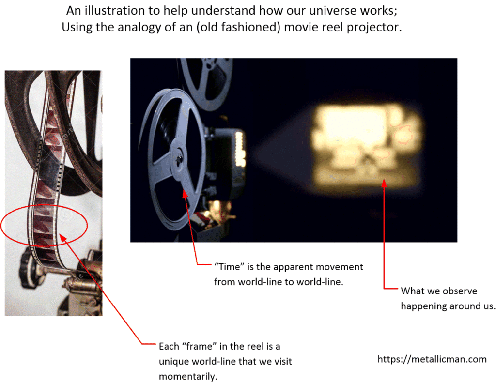
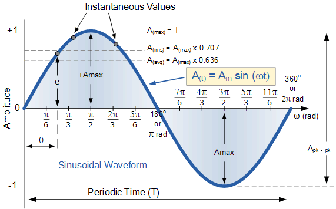
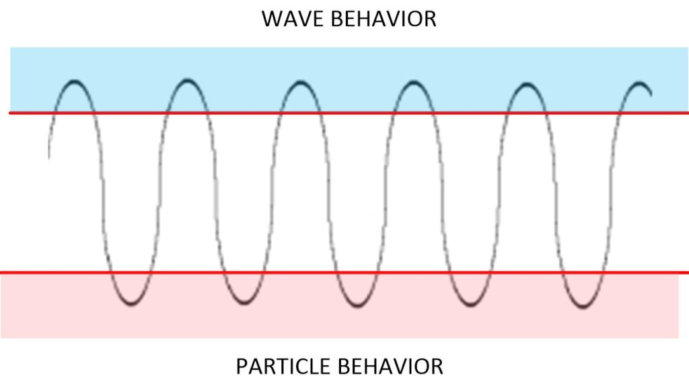
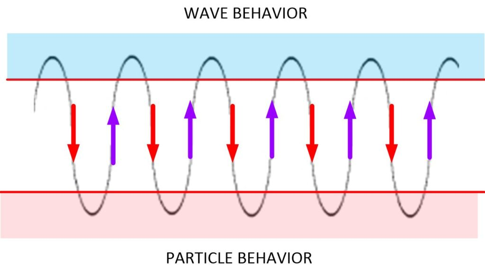
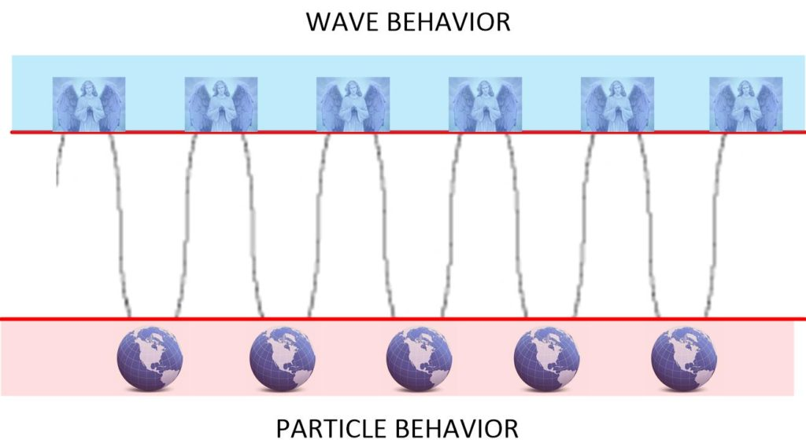
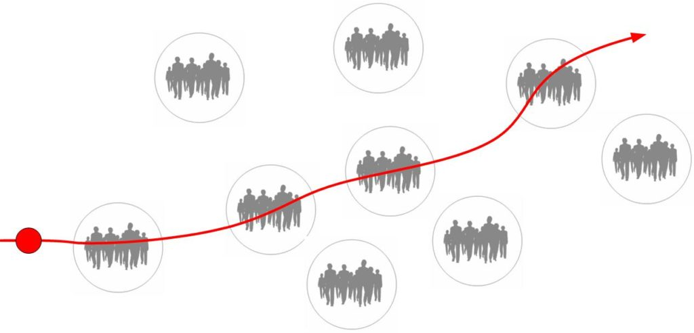
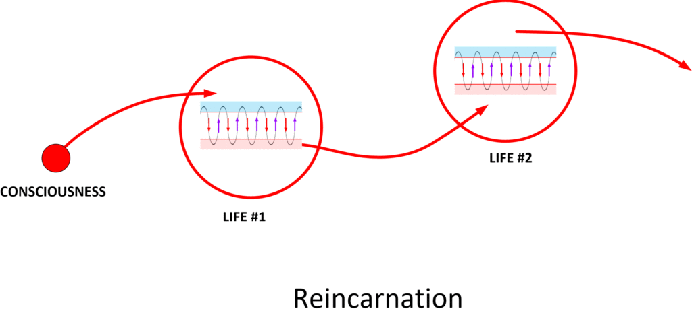
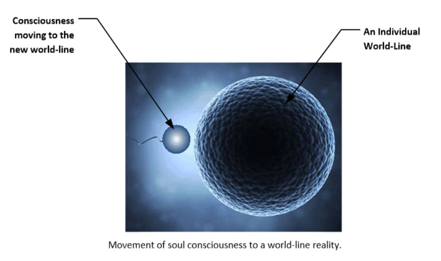
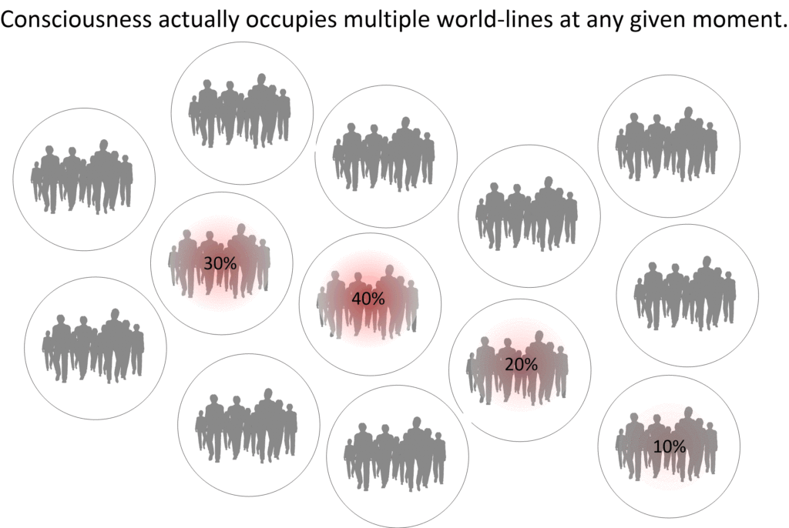
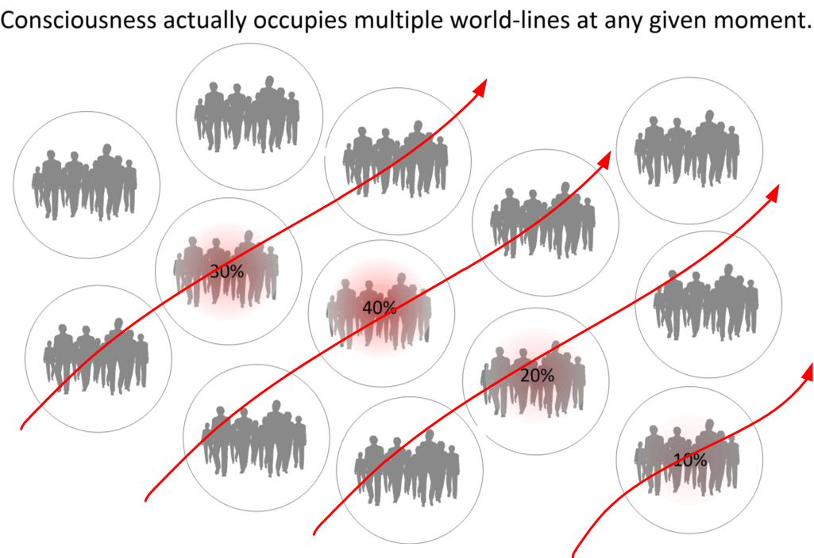

This article goes into a much more involved study of how consciousness interacts with world-lines in the MWI.
In so doing, we have to deconstruct some of the simpler conventions that we have used in the past, and layout a better foundation of how the MWI actually interacts with the consciousness.
In earlier posts, I have gone into details on how the MWI actually manifests in our reality. In those presentations, I intentionally simplified things for easy understanding.
It's sort of like how you teach a person to swim by holding them and letting them kick their legs in the water. You use "supports". These supports aren't really the "real thing", but they help you along the road to eventually master the real thing.
In this post, we will assume that you the reader have mastered a basic understanding of those previous points.
- Consciousness moves in and out of world-lines.
- This movement appears as “time”.
- Our thoughts direct which world-lines that we enter.
Introduction
In this article, we will now elaborate upon the world-line construction. We will look at what it actually is and how it actually works. Not everyone needs to know or understand this. But for those that do, this will help obtain a better understanding of it.

It will appear really strange, but I do hope that I can help add some insight into everything.
Now, this article is for advanced students and are advanced studies.
Most of the people who have already mastered World-Line-Travel 101, you won’t need to read this. For the handful of people that understand world-line-travel-101, you don’t really need to understand much more than that.
But for those of you that need more, then here it is.
Of course, it’s long due. But all this COVID-19 nonsense has pretty much hijacked my postings and articles.
Quick Review
The universe is nothing like people think it is.

Instead of all of us sharing the same physical universe, we exist as consciousness within our very own personal reality. It only appears that we share it with others.
There is a near infinite number of these realities. They are known as individual world-lines.

We travel through these different world-lines at a rate of around 4 Hz. The selection of the world-line we exist within momentarily is manifested by our thoughts. This is a rather speedy switching in and out of world-lines.
Roughly, our consciousness pops in and out of four different world-lines every second.
Each world-line is nearly identical to the one before it.
The differences are determined by your thoughts, conscious and unconscious.
If you want to review what all this is about, I would suggest you check out these following posts first:


So please keep in mind that while everything posted previously is quite accurate, it is actually simplified for understanding.
Now, we get into a deeper perception of how things actually work. And in the process better understand all that PSI and “twilight zone” stuff that appears from time-to-time.
Once you understand these new elements of consciousness fundamentals and world-line interaction, you can understand how people are able to do many "tricks" with PSI, and other strange things...
Clarification #1 – Consciousness cycles in and out of world-lines in a sinusoidal manner.
This should be obvious to the astute reader, but it needs to be stated.
The consciousness moves in and out of world-lines naturally. It moves in a sinusoidal manner. It moves in and out. In and out. Over and over.
The rate of travel varies from person to person, but typically averages around 4 Hz.

During this time it changes “shape properties”. Back and forth. Back and forth. Back and forth.
At “the top” of the cycle it takes on wave behavior.
At the “bottom” of the cycle, it takes on particle behavior.

When it takes on wave behavior it moves from one world-line to another directed by thought. It exists “in the spirit world”.

When it takes on particle behavior, it occupies a world-line and inhabits a physical body.

With this understood, we can define the amount of time that the transition from world-line to world-line takes, as well as the duration a consciousness spends inside each world-line.
If there are 4 cycles per second, then, each trip back and forth from the "Heavenly realms" to a world-line is 1/4 a second. And thus, (roughly) each moment at a given world-line is half of that. Or, 1/8 of a second.
Some “take aways”;
- Humans, via our consciousness, is continuously in touch with the “Heavenly realms”. Every moment we touch heaven, and enter our latest world-line.
- When in the wave form, we can perform all sorts of activities and have all sorts of “abilities” not tied to any world-line. There are no physical limitations. Humans spend approximately 50% of their time “connected” to the “Heavenly realms”.
- For us to maintain (retain) our memories from world-line to world-line, the memories are deposited outside the brain. It exists within the “Heavenly realms” not within the physical brain.
Key Correction #1 – Consciousness moves about the MWI when attached to a human body.
In my previous simplifications, I have referred to, and drawn the consciousness as a red blob; a point of light. I have stated that “Soul” can generate multiple Consciousnesses that it places on “journeys”. These “Journeys for experience” is a life-experience for a soul.

The Consciousness normally travels in and out of world-lines all a person’s life.
Once a consciousness uses up a body as it travels in and out of world-lines, it dies. The consciousness stays in the wave-form and “rests” within the “Heavenly realms”.
A decision is thus made by the soul, the consciousness, and their associations with other spirits, angels, and heavenly denizens on what to do next.
Often, it involves being injected on another “journey” in another life. This is often referred to as reincarnation.

Key Correction #2 – Consciousness is not a point-source.
Consciousness is actually quite complex and complicated.
It is not a blob, a dot, a “something”.
It’s a collection of “stuff” that operates in such a way that the soul, the consciousness, the MWI and the thoughts generate memories and navigate the life-path to create experiences that the soul can learn from.
Soul creates a “consciousness” that it uses to travel the MWI.
It inserts it into a given world-line, and allows it to move unencumbered and subject to it’s own thoughts. Each world-line is a “physical reality” that the consciousness occupies.

Now, in all of this, I drew consciousness (literately, and artistically) as a point. I drew it as a red circular blob. Like in the two earlier drawings.
As in the above drawing showing the consciousness as a red blob in front of a long tunnel to the soul.

However, the true reality is a bit different.
Get ready to have your mind blown.
The consciousness actually occupies multiple World-line-realities at any given moment simultaneously. It is actually not a “red blob”. It’s a lot of “red blobs”. Each one occupying a different world-line… simultaneously.
It is a “shared potential”. Some of the consciousness occupies one world-line at any given moment, while other aspects of it’s consciousness occupies other world-lines.
Sort of like this…

Then, they move on to the next group of world lines. Then again. Then again. Then again. Over and over.
It’s not a red blob moving in and out.

Instead, consciousness occupies numerous world-lines at any given moment. Each world-line is different, but similar. The Consciousness interprets the differences as a singular world-line.
Key Correction #2 – World-Lines are not point-sources either.
We have a tendency to think of a “world” as a fixed and solid place. And the way that I have described the movement of time, has been the consciousness moving in and out from these fixed world-line realities.
A "world-line" is the resultant combined perception of a moment "frozen in time" that combines multiple world-lines into a singular apparent place.
What we think a world-line is is not a fixed singular place.
It is the sum total average of all the experiences that a conscientiousness is exposed to at any singular moment in time.
It is the exact opposite of “living within an echo chamber“. It enables the consciousness to experience different experiences instead of simply reinforcing existing ones that the consciousness has been accustomed to over the years.
Key Correction #3 – World-Lines are not entirely empty of other consciousnesses.
To best understand how you can move in and out of multiple world-lines, it makes sense to think of things simply. Your consciousness is a point or sphere. The world-lines are empty and only occupied by “shadow consciousnesses”. But that’s really a simplistic picture.
It’s a simple narrative.
Imagine that you are only consciousness. And that you can move in and out of different world-lines freely. They seem to be occupied by all kinds of other people, but that is just an illusion. Most world-lines are just empty. And all those other people are just “quantum shadows” of others.
Now, this simplistic narrative needs to be revised to reflect the reality.
Instead of 100% of a consciousness entering a world-line where all the “quantum shadows” only have 0% occupancy within that reality…
…we now look at the reality…
Your consciousness might devote (say) 23% occupation within a given world-line, and all those “quantum-shadows” are actually occupied by other consciousnesses. Only they are a much smaller percentage. Often varying from 0.0002% to 0.1%.
Thus, in truth, all world-lines are not truly empty. They are occupied to some extent. And all of the other consciousnesses react to the way your consciousness behaves within any given particular world line.
Conclusion
And this, boys and girls, is the more advanced understanding of how the universe actually works. It’s simple, but complex.
It’s “rich” and “colorful”.
It also helps to understand how PSI and other psychic behaviors manifest within our reality.
And no, you are not going to find this anywhere else on the internet or in the halls of the universities. But this is what I have been tasked to understand (or at least part of it, anyways) as part of my MAJestic role.
I have much more, but it starts to really get complicated.
In it, I explain how the physical materials can be manipulated by thought and how one can travel through “apparent time”, and all sorts of curious other things. But, I am not ready to release all these other things out to the public at this time. It’s not the time.
I hope that you enjoyed this post. If you want to see more along these lines, please go to my MAJestic Index, here…
Articles & Links
You’ll not find any big banners or popups here talking about cookies and privacy notices. There are no ads on this site (aside from the hosting ads – a necessary evil). Functionally and fundamentally, I just don’t make money off of this blog. It is NOT monetized. Finally, I don’t track you because I just don’t care to.
To go to the MAIN Index;
- You can start reading the articles by going HERE.
- You can visit the Index Page HERE to explore by article subject.
- You can also ask the author some questions. You can go HERE .
- You can find out more about the author HERE.
- If you have concerns or complaints, you can go HERE.
- If you want to make a donation, you can go HERE.
Please kindly help me out in this effort. There is a lot of effort that goes into this disclosure. I could use all the financial support that anyone could provide. Thank you very much.
[wp_paypal_payment]